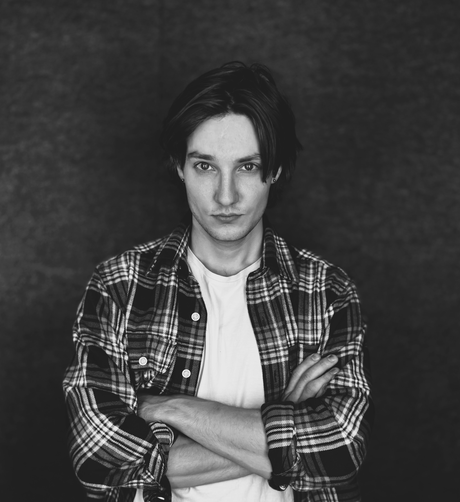
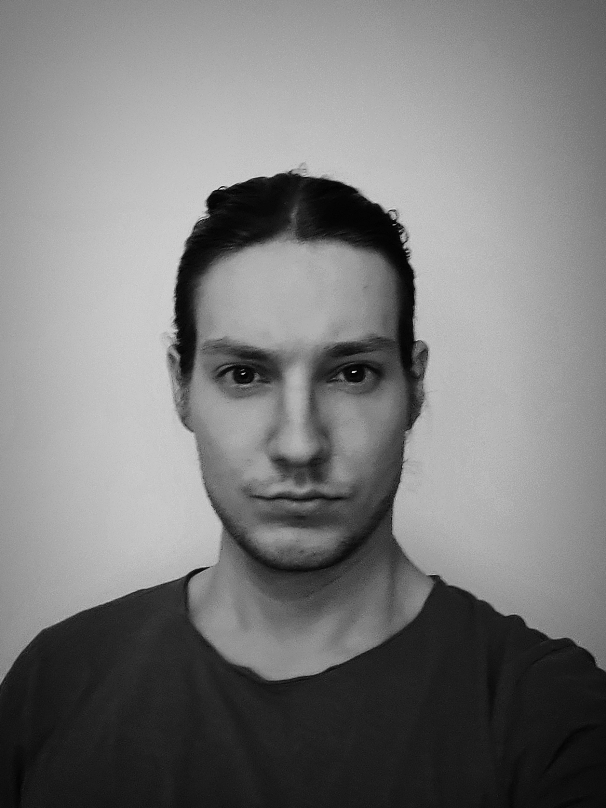
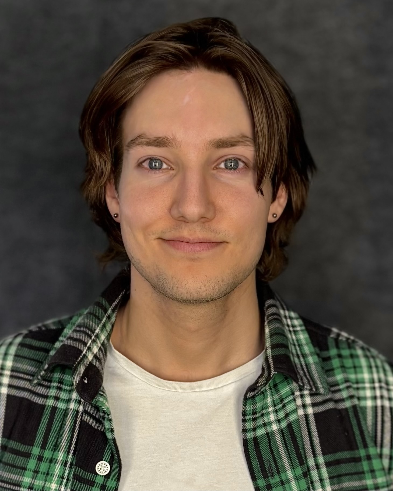
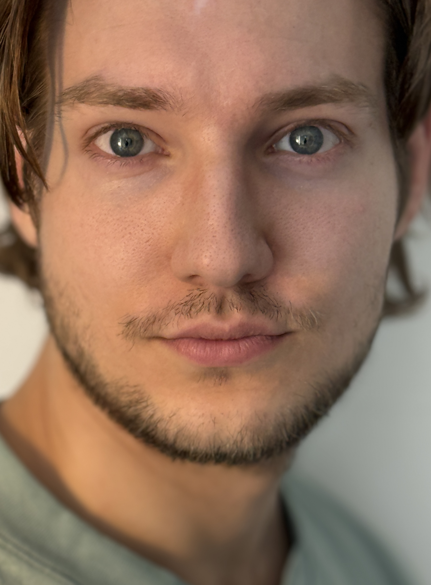
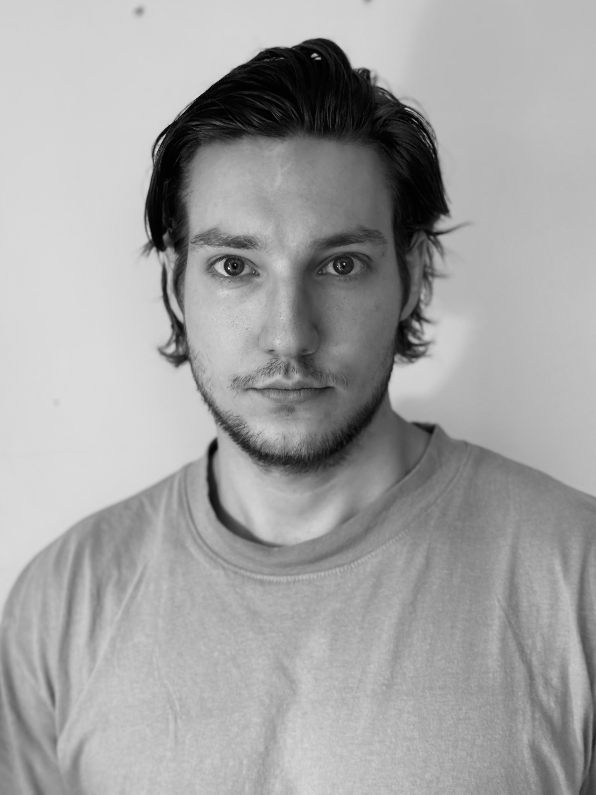

OSKAR BRANDELL
Skådespelare | Actor






SHOWREEL
Om mig / About me
Svenska
- Utbildad vid Calle Flygare Teaterskola med bakgrund som industridesigner och maskiningenjör.
- Medverkat i produktioner som KOPPS, Innan Jag Växer Upp och The Scar That Scares Me.
- Även verksam som manusförfattare.
- Läs mitt fullständiga CV här nedan eller läs min profil direkt på Internet Movie Database.
English
- Trained at Calle Flygare Teaterskola with a background in industrial design and mechanical engineering.
- Appeared in productions including KOPPS, Innan Jag Växer Upp and The Scar That Scares Me.
- Also active as a screenwriter.
- Review my credits below or visit my profile directly on the Internet Movie Database.
Snabba fakta
Spelålder
20 – 30 år
Längd / Vikt
180 cm / 75 kg
Ögon / Hår
Mörkblå / Ljusbrun
Språk
Svenska, Engelska (Am), Spanska
Erfarenhet i urval
| 2026 | KOPPS – Norrtäljesommarscen |
| 2025 | The Scar That Scares Me – Nelson (Regi: Michael Asonganyi) |
| 2020 | Innan Jag Växer Upp – Talroll (Regi: Martin Ekelund) |
| 2020 | Skattkammarön – Mr Arrow (Pegasus) |
Utbildning
| 2024–2026 | Calle Flygare Teaterskola |
| 2025 | Cinemantrix – Grundkurs i skådespeleri |
| 2020 | Natalie Portman Masterclass – Videokurs i skådespeleri |
| 2020 | Kulturama – Skådespel för film & tv |
Särskilda färdigheter
Fysiskt & Stunt
Kampsport, Parkour, Stunt, Improvisation, Kameravana
Musik & Studio
Sång, Elgitarr, Gitarr, Elbas
Produktion
Filmregissör, Filmproducent, Fotograf, Författare
Kontakt
Direktkontakt
E-post: oskarbrandell@hotmail.se
Telefon: (+46) 76 006 73 13